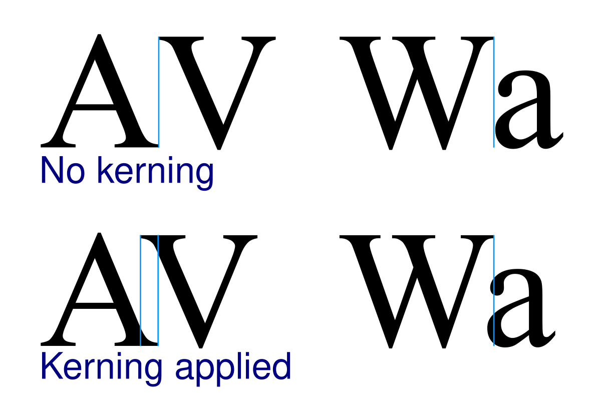
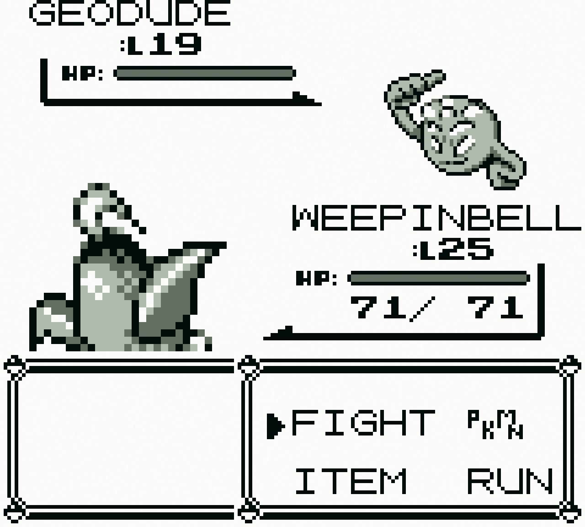

MonoSpaced Fonts
There are two types of spaced fonts: Monospaced & Proportional. Monospaced fonts have constant spacing between characters while proportional fonts have variable spacing between characters. Specifically given two pairs of letters, a proportional font will tell me how far I should put the second glyph relative to the first. So if the letters 'Fo' are being rendered, in a proportional font the letter 'o' could be tucked under the 'F' so would have less spacing than say the letter pair 'DO'. This spacing is reffered to as the 'kerning' in typography, and leads to better readability. Monospaced fonts on the otherhand have a constant spacing between the letters.

Kerning visual example
When we're writing our own text renderer, monospaced fonts are alot easier to render than proportional fonts. Basically You just have to step an equal amount everytime you render a new letter. Monospaced fonts are still popular today, used in applications like code text-editors. They were also common in retro videogames as they required less CPU power to render them.

Monospaced font used in Pokemon on the Gameboy
In this article I show you how to think about Font's in your game project and how to implement a monospaced text renderer. Let's get started!
Loading Fonts
Normally you start with a .ttf file (.otf etc.) that contains vector data about how to draw the letters and meta-data about the font like the kerning. From here you could try render the letters directly from their vector counter-part, however this can be complicated and slow for a realtime application like a game. Instead an intermediate bitmap is usually created of the glyphs first, then this bitmap is rendered to the screen, using UV coordinates to pick the correct glyph.
There are multiple libraries you can use to create these intermediate bitmaps - usually reffered to as a 'Font Atlas'. Windows has it's own built in renderer. A free library commonly used is Sean Barret's 'stb_truetype'. It has multiple options - you can ask it to create a font bitmap for you (least amount of work), to getting each glyph at a time and making your own font atlas (more work but greater control). So we'll include that in our project now to get started.
#define STB_TRUETYPE_IMPLEMENTATION
#include "stb_truetype.h"
Then we'll have two functions: one for intializing the font bitmap, the second for drawing it. Let's add that in now.
void initFontAtlas(char *fontFile) {
FILE *ttfFile = fopen(fontFile, "rb");
fseek(ttfFile, 0, SEEK_END);
long fileSize = ftell(fp);
//NOTE: Allocate the memory to store the file contents. Plus 1 for zero terminated contents.
void *ttfBuffer = malloc(fileSize + 1)
fread(ttfBuffer, 1, fileSize, ttfFile);
int tempBitmapWidth = 512;
int tempBitmapHeight = 512;
//NOTE: Allocate the CPU side image to render the glyphs to. We will then upload this to the GPU to use by our game renderer.
unsigned char *tempBitmap = malloc(tempBitmapWidth*tempBitmapHeight*sizeof(unsigned char));
//NOTE: Meta data about the font glyphs like width and height
stbtt_bakedchar glyphData[96]; // ASCII 32..126 is 95 glyphs
float fontHeight = 32.0;
stbtt_BakeFontBitmap(ttfBuffer, 0, fontHeight, tempBitmap, tempBitmapWidth, tempBitmapHeight, 32, 96, glyphData);
free(ttfBuffer);
}
So far we've opened and read the .ttf file we've supplied. It then created a temporary image buffer to render the font atlas to. We also create an array to store the meta-data for each glyph. We then ask stb_truetype library to make our font atlas for us with 'stbtt_BakeFontBitmap'.
Now that we've got out font atlas stored in 'tempBitmap', we'll upload it to the GPU now so we can use it just like other game textures. You'll notice we're passing in the flag 'GL_ALPHA', that's because the font atlas stb_truetype makes for us is 8bit per color - just the alpha value.
{
...
//NOTE: Upload to the GPU now. You can change this to however you upload textures in your game engine.
GLuint texHandle;
glGenTextures(1, &texHandle);
glBindTexture(GL_TEXTURE_2D, texHandle);
glTexImage2D(GL_TEXTURE_2D, 0, GL_ALPHA, tempBitmapWidth, tempBitmapHeight, 0, GL_ALPHA, GL_UNSIGNED_BYTE, tempBitmap);
glTexParameteri(GL_TEXTURE_2D, GL_TEXTURE_MIN_FILTER, GL_LINEAR);
//NOTE: Free our CPU side image data now
free(tempBitmap);
}
That's the end of that function. It creates the font atlas & uploads it to the GPU. However in order to now write text, we actually need a way to refer to this texture and the font meta-data. So we'll make a struct for this.
struct Font {
unsigned int textureHandle; //NOTE: Handle to the texture on the GPU
stbtt_bakedchar glyphData[255]; //NOTE: Meta data for each glyph like width and height and the uv coords in the texture atlas. In this case it's limited to be 255 characters per font.
float fontHeight;
int startOffset;
float2 fontAtlasDim;
};
Now let's create one of these in our initFontAtlas function and return it. The whole complete function will now look like this.
Font initFontAtlas(char *fontFile) {
Font result = {};
//NOTE: Open & get size of ttf file
FILE *ttfFile = fopen(fontFile, "rb");
if(ttfFile){
fseek(ttfFile, 0, SEEK_END);
size_t fileSize = ftell(ttfFile);
fseek(ttfFile, 0L, SEEK_SET);
//NOTE: Allocate the memory to store the file contents. Plus 1 for zero terminated contents.
unsigned char *ttfBuffer = (unsigned char *)malloc(fileSize + 1);
size_t bytesRead = fread(ttfBuffer, 1, fileSize, ttfFile);
//NOTE: Read the ttf file contents
if(bytesRead == fileSize) {
int tempBitmapWidth = 512;
int tempBitmapHeight = 512;
result.fontAtlasDim.x = tempBitmapWidth;
result.fontAtlasDim.y = tempBitmapHeight;
//NOTE: Allocate the CPU side image to render the glyphs to. We will then upload this to the GPU to use by our game renderer.
unsigned char *tempBitmap = (unsigned char *)calloc(tempBitmapWidth*tempBitmapHeight*sizeof(unsigned char), 1);
assert(tempBitmap);
result.fontHeight = 32.0;
result.startOffset = 32;
//NOTE: 32, 96 values denote the main ASCI alphabet - starting at [SPACE] and going to the end of the asci table. The space is important because it tells us the width of a space.
int r = stbtt_BakeFontBitmap(ttfBuffer, 0, result.fontHeight, tempBitmap, tempBitmapWidth, tempBitmapHeight, 32, 96, result.glyphData);
if(r == 0) {
printf("ERROR: Couldn't render font atlas\n");
assert(false);
}
//NOTE: Upload to the GPU now. You can change this to however you upload textures in your game engine.
glGenTextures(1, &result.textureHandle);
renderCheckError();
glBindTexture(GL_TEXTURE_2D, result.textureHandle);
renderCheckError();
glTexImage2D(GL_TEXTURE_2D, 0, GL_RED, tempBitmapWidth, tempBitmapHeight, 0, GL_RED, GL_UNSIGNED_BYTE, tempBitmap);
renderCheckError();
glTexParameteri(GL_TEXTURE_2D, GL_TEXTURE_MIN_FILTER, GL_LINEAR);
renderCheckError();
glBindTexture(GL_TEXTURE_2D, 0); //NOTE: Unbind the texture
renderCheckError();
//NOTE: Free our CPU side image data now
free(tempBitmap);
} else {
printf("bytesRead: %ld\n", bytesRead);
assert(false);
}
free(ttfBuffer);
} else {
assert(false);
}
return result;
}
Using the font atlas
Great, now that we have the font atlas, we can now use it to render text. The second function will be called renderText, and this is what it does render's text.
void renderText(Renderer *renderer, Font *font, char *nullTerminatedString, float2 start, float scale) {
float x = start.x;
float y = start.y;
while (*nullTerminatedString) {
if(*nullTerminatedString != '\n') {
if (*nullTerminatedString >= 32 && *nullTerminatedString < 126) {
stbtt_aligned_quad q = {};
int index = *nullTerminatedString - font->startOffset;
stbtt_GetBakedQuad(font->glyphData, font->fontAtlasDim.x, font->fontAtlasDim.y, index, &x, &y, &q, 1);
float width = q.x1 - q.x0;
float height = q.y1 - q.y0;
float x1 = 0.5f*width + q.x0;
float y1 = 0.5f*height + q.y0;
x1 = (scale*(x1 - start.x)) + start.x;
y1 = (scale*(y1 - start.y)) + start.y;
float4 uvCoords = make_float4(q.s0, q.s1, q.t1, q.t0);
pushGlyph(renderer, make_float3(x1, y1, 1), make_float3(scale*width, scale*height, 1), uvCoords, make_float4(1, 1, 1, 1));
}
} else {
//NOTE: Move down a line
x = start.x;
y += font->fontHeight;
}
nullTerminatedString++;
}
}
It walks through each character in the string and gets the corresponding glyph bitmap. stbtt_GetBakedQuad returns the size & position of the glyph given where we would like to render it.
Once we've got this info i.e. the (x, y) position and the (width, height) data we can send this to our renderer. The pushGlyph function is a function we've defined in our own custom renderer and it's up to you to implement this.
Since we have only created ASCI characters when we created our font atlas, we make sure we only ever ask to draw these characters with the 'if' statment:
if (*nullTerminatedString >= 32 && *nullTerminatedString < 126)
To extend this to full unicode character set, you'll have to extend how the font atlas treats characters it hasn't yet renderered into it's bitmap. You'll have to create them as it encouter's them, then caches them to use again.
Go Further
1. Extend this to handle more then just Asci glyphs.
2. Be hable to decode utf-8 strings to get correct unicode codepoint - right now our 'renderText' function assumes each character is one byte i.e. Asci
3. Support kerning - add a kerning table for each codepoint pair.
4. Render using SDF data instead of a bitmap